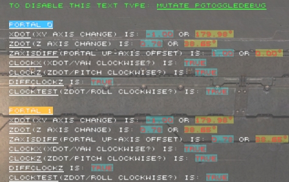

Log Interaction
Shambler: Got fed up of using the log window to debug stuff so made this real quick....basically this code will allow you to display log info on the HUD ingame and there are a number of ways you can format it to stand out.
Posting it on the wiki for others who may find use in it.

How to use it
Create a mutator like this one:
Class pgPortalGunMut extends Mutator; function ModifyPlayer(Pawn Other) { local int i; // Debug if (Other.Controller != none && PlayerController(Other.Controller) != none && PlayerController(Other.Controller).Player != none && PlayerController(Other.Controller).Player.InteractionMaster != none) { for (i=0; i<PlayerController(Other.Controller).Player.LocalInteractions.Length; ++i) { if (MathDebugInteraction(PlayerController(Other.Controller).Player.LocalInteractions[i]) != none) { bSkip = True; break; } } if (!bSkip) PlayerController(Other.Controller).Player.InteractionMaster.AddInteraction(string(Class'MathDebugInteraction'), PlayerController(Other.Controller).Player); } Super.ModifyPlayer(Other); } function Mutate(string MutateString, PlayerController Sender) { local int i; if (MutateString ~= "pgToggleDebug") { if (Sender.Player != none && Sender.Player.InteractionMaster != none) { for (i=0; i<Sender.Player.LocalInteractions.Length; ++i) { if (MathDebugInteraction(Sender.Player.LocalInteractions[i]) != none) { MathDebugInteraction(Sender.Player.LocalInteractions[i]).ToggleDebug(); break; } } } } else { Super.Mutate(MutateString, Sender); } }
Add some debugging code to the class you want to debug
Class SomeClass extends SomeActor; var MathDebugInteraction ActiveDebug; var int FireMode; // This isn't important function SomeFunction() { local float XDot, ZDot, ZAxisDiff, ClockX, ClockZ, DiffClockZ, ClockTest; // Do stuff with these variables XDot = Blah; ZDot = Blah; ZAxisDiff = Blah; ClockX = Blah; ClockZ = Blah; ClockTest = Blah; DiffClockZ = Blah; // Log stuff to display on screen (shown in picture) // Format of the LogString function: (copied here for reference) // function LogString(string Info, optional color StringColor, optional bool bUseColor, optional bool bUnderline, optional color HighlightColor, optional bool bDontEndLine) // Parameter 1: The string you want to log // Parameter 2: The colour of the logstring // Parameter 3: Pass in True if you put in a colour for parameter 2 (I should change this but cba) // Parameter 4: Underline the text if True is passed in // Parameter 5: If you pass a colour in (with an Alpha greater than 0) then the text is highlighted with that colour // Parameter 6: If you want the next log string to write on the same line, pass in True here // I want to rewrite the log info every tick, so check the timestamp on the debug object...if its 'out of date', use EmptyList to wipe the log data (specifying a new timestamp) if (ActiveDebug.LogTimestamp != Level.TimeSeconds) { ActiveDebug.EmptyList(Level.TimeSeconds); // The command to turn this off is detailed in the mutator class ActiveDebug.LogString("To disable this text type: ", Class'Canvas'.static.MakeColor(0,255,0,255), True,,,True); ActiveDebug.LogString("Mutate pgToggleDebug", Class'Canvas'.static.MakeColor(0,255,0,255), True, True); ActiveDebug.LogString(""); } if (FireMode == 0) ActiveDebug.LogString("Portal"@FireMode, Class'Canvas'.static.MakeColor(255,255,255,255), True, True, Class'Canvas'.static.MakeColor(0,128,255)); else ActiveDebug.LogString("Portal"@FireMode, Class'Canvas'.static.MakeColor(255,255,255,255), True, True, Class'Canvas'.static.MakeColor(255,128,0)); ActiveDebug.LogString("XDot", Class'Canvas'.static.MakeColor(255,255,255,255), True, True,, True); ActiveDebug.LogString("(XY Axis change) is: ", Class'Canvas'.static.MakeColor(255,255,255,255), True,,,True); ActiveDebug.LogString(string(XDot),,,, Class'Canvas'.static.MakeColor(0,255,255,64), True); ActiveDebug.LogString(" or ", Class'Canvas'.static.MakeColor(255,255,255,255), True,,,True); ActiveDebug.LogString(string(ACos(XDot) * 57.295779)$"º",,,, Class'Canvas'.static.MakeColor(255,255,0,64)); ActiveDebug.LogString("ZDot", Class'Canvas'.static.MakeColor(255,255,255,255), True, True,, True); ActiveDebug.LogString("(Z Axis change) is: ", Class'Canvas'.static.MakeColor(255,255,255,255), True,,,True); ActiveDebug.LogString(string(ZDot),,,, Class'Canvas'.static.MakeColor(0,255,255,64), True); ActiveDebug.LogString(" or ", Class'Canvas'.static.MakeColor(255,255,255,255), True,,,True); ActiveDebug.LogString(string(ACos(ZDot) * 57.295779)$"º",,,, Class'Canvas'.static.MakeColor(255,255,0,64)); ActiveDebug.LogString("ZAxisDiff", Class'Canvas'.static.MakeColor(255,255,255,255), True, True,, True); ActiveDebug.LogString("(Portal Up-Axis offset) is: ", Class'Canvas'.static.MakeColor(255,255,255,255), True,,,True); ActiveDebug.LogString(string(ZAxisDiff),,,, Class'Canvas'.static.MakeColor(0,255,255,64), True); ActiveDebug.LogString(" or ", Class'Canvas'.static.MakeColor(255,255,255,255), True,,,True); ActiveDebug.LogString(string(ACos(ZAxisDiff) * 57.295779)$"º",,,, Class'Canvas'.static.MakeColor(255,255,0,64)); ActiveDebug.LogString("ClockX", Class'Canvas'.static.MakeColor(255,255,255,255), True, True,, True); ActiveDebug.LogString("(XDot/Yaw clockwise?) is: ", Class'Canvas'.static.MakeColor(255,255,255,255), True,,,True); ActiveDebug.LogString(string(bool(ClockX)),,,, Class'Canvas'.static.MakeColor(0,255,255,64)); ActiveDebug.LogString("ClockZ", Class'Canvas'.static.MakeColor(255,255,255,255), True, True,, True); ActiveDebug.LogString("(ZDot/Pitch clockwise?) is: ", Class'Canvas'.static.MakeColor(255,255,255,255), True,,,True); ActiveDebug.LogString(string(bool(ClockZ)),,,, Class'Canvas'.static.MakeColor(0,255,255,64)); ActiveDebug.LogString("DiffClockZ", Class'Canvas'.static.MakeColor(255,255,255,255), True, True,, True); ActiveDebug.LogString(" is: ", Class'Canvas'.static.MakeColor(255,255,255,255), True,,,True); ActiveDebug.LogString(string(bool(DiffClockZ)),,,, Class'Canvas'.static.MakeColor(0,255,255,64)); ActiveDebug.LogString("ClockTest", Class'Canvas'.static.MakeColor(255,255,255,255), True, True,, True); ActiveDebug.LogString("(ZDot/Roll clockwise?) is: ", Class'Canvas'.static.MakeColor(255,255,255,255), True,,,True); ActiveDebug.LogString(string(bool(ClockTest)),,,, Class'Canvas'.static.MakeColor(0,255,255,64)); ActiveDebug.LogString(""); }
And put this in a .uc file in with your source, modify the 'foreach' loop on line 45 so you can 'attach' (i.e. put a reference to) the interaction in the class you want to debug.
// An interaction to help me debug problems with the portal gun math Class MathDebugInteraction extends Interaction; struct LogElement { var string LogString; var color StringColor; var bool bUnderline; var color HighlightColor; var bool bDontEndLine; }; var array<LogElement> LogList; var int ListSpacing; var color ListColor; var font ListFont; var float ListX, ListY, FontY, FontScale, LogTimestamp; var bool bInitialSetup; var bool bDisableDebug; function ToggleDebug() { bDisableDebug = !bDisableDebug; if (bDisableDebug) EmptyList(); } function PostRender(canvas Canvas) { local pgPortalDecal PD; local int i; local float LenX, LenY, LastX, LastY; /* EmptyList(); LogString("Arf, testing"); LogString("Wewt, testing2", Canvas.MakeColor(255,255,255,255), True, True,,True); LogString("AMG TEST",,,True,Canvas.MakeColor(0,255,0,128)); LogString("FEYNAL TEST!!"); */ if (ViewportOwner != none && ViewportOwner.Actor != none && ViewportOwner.Actor.Pawn != none && xPawn(ViewportOwner.Actor.Pawn) != none) foreach ViewportOwner.Actor.DynamicActors(Class'pgPortalDecal', PD) if (PD.Owner == ViewportOwner.Actor/* && PD.FireMode == 0*/ && PD.ActiveDebug != self) PD.ActiveDebug = self; if (LogList.Length == 0) return; // ListX and ListY in default properties tell the code where to start drawing (between 0.0 and 1.0), FontScale determines the size of font with changing screen size if (!bInitialSetup) { ListX = Canvas.ClipX * ListX; ListY = Canvas.ClipY * ListY; FontScale = Canvas.ClipX * FontScale; bInitialSetup = True; } Canvas.Reset(); // Setup stored variables Canvas.Font = ListFont; Canvas.Style = 5; Canvas.CurX = ListX; Canvas.CurY = ListY; Canvas.FontScaleX = FontScale; Canvas.FontScaleY = FontScale; Canvas.DrawColor = ListColor; if (FontY == 0) Canvas.StrLen("X", FontY, FontY); // Draw the list for (i=0; i<LogList.Length; ++i) { if (Canvas.CurY < Canvas.ClipY && Canvas.CurX < Canvas.ClipX && LogList[i].LogString != "") { LastX = Canvas.CurX; LastY = Canvas.CurY; Canvas.StrLen(LogList[i].LogString, LenX, LenY); // Manage highlighting if (LogList[i].HighlightColor.A != 0) { Canvas.DrawColor = LogList[i].HighlightColor; Canvas.DrawRect(Texture'WhiteTexture', Min(LenX, Canvas.ClipX - Canvas.CurX), FontY); Canvas.CurX = LastX; Canvas.CurY = LastY; } // Setup the color Canvas.DrawColor = LogList[i].StringColor; // Manage underlining if (LogList[i].bUnderline) { Canvas.CurY += FontY; Canvas.DrawRect(Texture'WhiteTexture', Min(LenX, Canvas.ClipX - Canvas.CurX), FontScale); Canvas.CurX = LastX; Canvas.CurY = LastY; } Canvas.DrawTextClipped(LogList[i].LogString); Canvas.CurX += Min(LenX, Canvas.ClipX - Canvas.CurX); } // Endline if (!LogList[i].bDontEndLine) { Canvas.CurX = ListX; Canvas.CurY += ListSpacing + FontY; } } Canvas.Reset(); } function EmptyList(optional float NewTimestamp) { LogList.Length = 0; if (NewTimestamp != 0.0) LogTimestamp = NewTimestamp; } // LogString parameters: // Parameter 1: The string you want to log // Parameter 2: The colour of the logstring // Parameter 3: Pass in True if you put in a colour for parameter 2 (I should change this but cba) // Parameter 4: Underline the text if True is passed in // Parameter 5: If you pass a colour in (with an Alpha greater than 0) then the text is highlighted with that colour // Parameter 6: If you want the next log string to write on the same line, pass in True here function LogString(string Info, optional color StringColor, optional bool bUseColor, optional bool bUnderline, optional color HighlightColor, optional bool bDontEndLine) { if (bDisableDebug) return; LogList.Length = LogList.Length + 1; LogList[LogList.Length-1].LogString = Info; if (bUseColor) LogList[LogList.Length-1].StringColor = StringColor; else LogList[LogList.Length-1].StringColor = ListColor; LogList[LogList.Length-1].bUnderline = bUnderline; LogList[LogList.Length-1].HighlightColor = HighlightColor; LogList[LogList.Length-1].bDontEndLine = bDontEndLine; } defaultproperties { bVisible=True ListX=0.5625 ListY=0.125 ListSpacing=5 ListColor=(R=255,G=0,B=0,A=255) ListFont=DefaultFont FontScale=0.00125 }
Shambler: Feel free to reformat the page, just keep all the code as it is  (I may update it later)
(I may update it later)